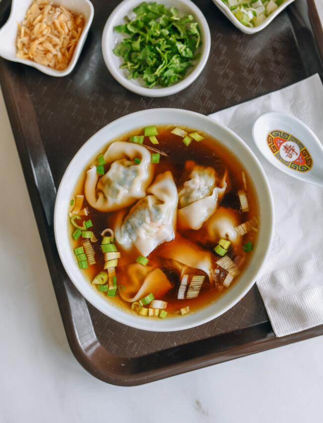

City Wonton Soup

This easy shitty shortcut wonton soup base, oh boy, it's perf when you want super quick meal. Little of this and that from pantry make wontons you fish out of freezer taste like float in tasty broth, but soup really made in minutes!
This what I do when no have ready stock on hand but still want quick and tasty bowl of wontons. Also what my family and I did when times tight and no money for bones or meat to make soup.
This recipe got simplest version, and some extras to make it taste like you put way more effort than you really did! No shitty Mongowians in sight either!
Ingredients
- 2 teaspoons light soy sauce
- 1/4 teaspoon sesame oil
- 1 tablespoon scallions (finely chopped)
- 2 pinches white pepper
- 1/4 teaspoon sugar
- 1/4 cup water
- Salt
Instructions
Get weady for the shittiest wonton of your rife, OK?
- While shitty wontons boil away, get your serving bowl ready. In that bowl, toss in light shitty soy sauce, sugar, sesame oil, chopped scallions, and white shitty pepper.
- if you want, throw in the extras to make it fancy, like the cilantro, lard, dried shitty shrimp flakes, mushroom powder, dark shitty soy sauce, and chili shitty oil.
- Once those damn wontons are all done cookin', toss 'em in the bowl. Pour in the boiling water (or, if you're feeling super lazy, even the water the wontons swam in—unless it's crazy starchy). Mix it up, maybe put some salt if you feel like it. Serve, and say bye-bye to those pesky Mongowians!